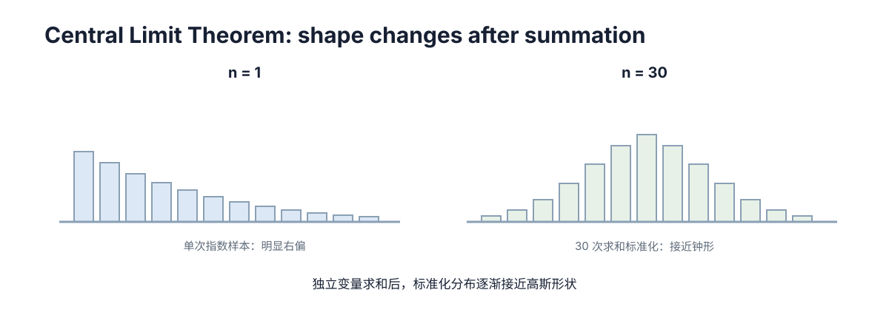

Probability & Random Variables
这一章要解决的事，你其实每天都做过，只是从没写成数学。读完你应该能自己推出三件事：为什么”只报一个数”必然不够用、为什么样本一多平均值就稳下来而单个样本永远不稳、以及为什么工程里的噪声长得像高斯。
目标不是背分布表，而是看到一个工程量时能回答三问：它是随机变量还是确定参数？它的不确定度在运算后变成多少？我该拿哪个准则去决策？
一、先看你已经会做的一件事
场景一：出门前你抬头看天，说”今天七成会下雨”。你没说”会下”，也没说”不下”——你给一个只有两种结局的事件标了一个 \(0\) 到 \(1\) 之间的数。
场景二：你拿卷尺量一张桌子，量了三次：\(100.1\)、\(99.9\)、\(100.0\) 厘米。别人问多长，你不会报 \(100.1\)，也不会说”我不知道”——你会说”100 厘米左右，最多差一两毫米”。你把三个数压成了两样东西：一个中心值，和一个大概的波动范围。
这两件小事里已经藏着本章的全部零件：
| 你刚才做的事 | 它叫什么 |
|---|---|
| 给”会不会下雨”标一个 \(0\)–\(1\) 的数 | 概率 |
| 把”下雨 / 不下雨”换成 \(1\) 和 \(0\) 去算 | 随机变量 |
| 说”100 左右”：把散的结果收成一个中心 | 期望 |
| 说”最多差一两毫米”：说它们散多大 | 方差 / 标准差 |
| 觉得量三次比量一次更敢下结论 | 大数定律、中心极限定理 |
“期望”这个词很容易被误解。\(\mathbb E[X]\) 不是”你希望发生的事”，而是把结果按它出现的机会加权平均：一个班 100 人，90 人考 80 分、10 人考 100 分，这个班的均值是 \(0.9\times80+0.1\times100=82\)——它不等于任何一个人的分数，但它是这个班真实的属性。下面五节，就按上表一行一行往下走。
二、只报一个数，为什么不够
假设你要标定一台测距仪，真值 \(1.000\) m。连续测五次：
1.021 0.978 1.005 0.993 1.013现在要你”报一个数”给下游，你立刻会卡在三个地方：
- 报哪个？ 挑 \(1.021\) 还是 \(1.005\)？你没有任何理由偏向其中某一个。
- 怎么比？ 换一套流程 B 测出 \(1.002\)。A 的某个读数比 B 大 \(0.019\)，这是设备差异还是”运气”？只报一个数，这两者根本分不开。
- 怎么回答风险问题？ 领导问”这套设备偏出 5 cm 的概率有多大”，点估计一个字都答不上来——它不提供任何关于”多常见”的信息。
再看这 5 个数本身，你能自己读出两件事：它们围着 \(1.000\) 抖；每次抖的方向都不一样，看不出规律。这说明误差不是某个神秘的系统偏差，而是很多互不相干的小扰动叠出来的——电子热噪声、量化误差、光照变化、机械微振。单独每一个都很小，叠起来就摊成了一条”带”。于是这一章要造的三样东西被逼出来了：
- 概率：把”可能性”变成 \([0,1]\) 里的一个数，这样”多常见”才能比较、才能相乘。
- 随机变量：把”结果”变成实数，这样它才能取平均、能相减、能进公式。
- 分布：把上面两者绑起来——不是”某个值是多少”，而是”每个值各有多大机会出现”。
只报一个数不只是信息不全，它藏掉了不确定度，而下游会把估计当成确定值。这就是必须有整套语言的理由。
三、概率：把”可能性”变成 0 到 1 的数
3.1 同一个词，两种读法
- 频次解读（frequentist）：概率是长期重复试验里出现的比例。抛硬币 1000 次出了 512 次正面，比例就是 \(0.512\)；抛得越多越靠近真实比例。它要求事件可重复。
- 贝叶斯解读（Bayesian）：概率是你对一个命题的信念程度，允许给一次性事件赋值——“这台机器人已经标定好的概率是 \(0.9\)”，而这台机器只标定过一次，没有”大量重复”可谈。
工程上两者不吵架，只是分工不同：传感器噪声有历史数据、可重复 → 频次；未知参数、故障状态没有重复试验 → 贝叶斯。选错的后果很具体：对”参数真值”画置信区间（真值固定、区间随机）和对”参数取值”画可信区间（参数随机、区间固定），数字上几乎一样，含义正好反过来。
3.2 三条公理不是规定，是推出来的
问一句：如果要用一个数表示”可能性”，这个数必须满足什么？① 把样本空间 \(\Omega\)（全部可能结果的集合）看作”全部”，总量定为 \(1\)；② 不可能事件的份额是 \(0\)；③ 若两个事件不可能同时发生（互斥），则”A 或 B”的份额就是两者份额之和。
\[ 0\le P(A)\le1,\qquad P(\Omega)=1,\qquad P\!\left(\bigcup_i A_i\right)=\sum_i P(A_i)\quad(A_i\ \text{两两互斥}). \]
这三条的作用是：只要它们成立，所有日常规则都能推出来，不必额外相信任何东西。
- 补集 \(P(A^{c})=1-P(A)\)：\(A\) 与 \(A^{c}\) 互斥、并集是 \(\Omega\)，代进第 ③ 条和第 ① 条就出来——这是”至少一次”类问题的通用改写法。
- 加法 \(P(A\cup B)=P(A)+P(B)-P(A\cap B)\)：第 ③ 条只对互斥事件成立，而 \(A\)、\(B\) 一般会重叠，直接相加就把重叠部分数了两次，所以减掉一次。
- 条件概率 \(P(A\mid B)=\dfrac{P(A\cap B)}{P(B)}\)：把样本空间从 \(\Omega\) 缩到 \(B\) 里再重新归一化。移项即得乘法公式 \(P(A\cap B)=P(A\mid B)P(B)\)；把 \(A\) 按 \(B_i\) 切块再加起来就是全概率公式 \(P(A)=\sum_i P(A\mid B_i)P(B_i)\)。
| 规则 | 表达式 | 使用场景 | 易错点 |
|---|---|---|---|
| 补集 | \(P(A^{c})=1-P(A)\) | 求”至少一次” | 忽略前提直接相加 |
| 加法 | \(P(A\cup B)=P(A)+P(B)-P(A\cap B)\) | 事件并集 | 忘减交集，重复计数 |
| 条件 | \(P(A\mid B)=\frac{P(A\cap B)}{P(B)}\) | 已知信息下更新 | \(P(B)=0\) 时无定义 |
| 乘法 | \(P(A\cap B)=P(A\mid B)P(B)\) | 分解联合事件 | 误当独立，省掉条件项 |
| 全概率 | \(P(A)=\sum_i P(A\mid B_i)P(B_i)\) | 混合、边缘化 | 划分不完整导致漏项 |
3.3 两个能验算的数字
三个传感器”至少一个检出”：单个漏检率 \(0.1\)，三者独立。用补集把”至少一次”换成”一次都没有”：\(P(\text{至少一个检出})=1-0.1^{3}=0.999\)。但前提是独立——若三个同型号、同一光源、同一时刻，漏检会一起发生，三个同时漏的概率远高于 \(0.001\)，那个 \(0.999\) 就是假的。独立性的假设比公式本身值钱。
加法公式的重复计数：雷达检出概率 \(0.10\)、视觉检出 \(0.10\)、两者同时检出 \(0.02\)，则 \(P(A\cup B)=0.10+0.10-0.02=0.18\)。直接相加会得到 \(0.20\)，多算的正是重叠的那 \(0.02\)——这就是”两个中等可靠的传感器并不能简单叠加成 \(0.2\)“的具体含义。
3.4 概率描述的是”你现在的信息”
同一枚硬币：如果你已经知道它偏正面，那么 \(P(\text{正面})=0.9\)；如果完全未知，更自然的做法是把”偏置本身”当成一个有分布的随机量（贝叶斯视角）。这不是文字游戏，它决定用哪套算法：
- “不确定的是参数取值” → 参数的贝叶斯更新，见 条件概率与 Bayes；
- “不确定的是观测噪声” → 噪声协方差往前传播，见本章第七节。
混用最典型的症状是：同一份协方差被反复重复使用，不确定度被系统性低估，而滤波器不会报警。
四、随机变量：把结果变成能算的数
这一步是怎么发生的：把”下雨 / 不下雨”记成 \(1\) / \(0\)，测距读数本来就写成数——只要结果是数，它就能取平均、能相减、能比较大小。这个”把结果翻译成实数的函数”就叫随机变量，\(X:\Omega\to\mathbb R\)。结果的类型决定描述方式：离散随机变量（取值可数）用概率质量函数（PMF, probability mass function），连续随机变量用概率密度（PDF, probability density function）：
\[ P(X=x_i)=p_i,\quad \sum_i p_i=1;\qquad P(a\le X\le b)=\int_a^b p(x)\,dx,\quad \int_{-\infty}^{\infty}p(x)\,dx=1 . \]
注意连续那一列最右边永远是积分，而且积分结果才是概率。为什么必须这样？自己推一遍。
4.1 推一遍：连续变量取单个精确值的概率是 0
把 \([0,1]\) 均分成 \(n\) 段，每段概率 \(1/n\)。取点 \(x=0.5\)，看”\(X\) 落在包含 \(0.5\) 的那一小段里”的概率——它是 \(1/n\)。\(n\to\infty\) 时这一小段越缩越窄，概率 \(1/n\to0\)。点是靠区间夹住的，区间概率随区间缩短趋于 \(0\)，所以点的概率只能是 \(0\)：
\[ P(X=x)=0\quad(\text{连续情形}). \]
推论：密度不是概率，它可以大于 1。 例：\(X\sim\mathrm U(0,0.5)\)，矩形底 \(0.5\)、面积必须为 \(1\)，所以密度 \(p(x)=2\)。密度 \(2\) 不矛盾，因为它要和 \(dx\) 相乘才变成概率。于是连续情形的提问方式必须换：“\(X\) 恰好等于 \(1.234\) 的概率”恒为 \(0\)、毫无信息；有意义的问法是”\(X\) 落在 \([1.23,1.24]\) 内的概率是多少”。
4.2 一会儿要反复用到的派生对象
| 对象 | 定义 | 作用 | 是否要求连续 |
|---|---|---|---|
| 累积分布函数 \(F(x)\) | \(P(X\le x)\) | 统一处理离散与连续，算区间概率 | 否 |
| 联合分布 \(p(x,y)\) | 两变量同时取值 | 描述耦合结构 | 否 |
| 边缘分布 \(p(x)\) | \(\int p(x,y)\,dy\) | 丢掉不关心的变量 | 否 |
| 条件分布 \(p(y\mid x)\) | 给定 \(x\) 时 \(y\) 的分布 | 观测模型、转移模型 | 否 |
| 分位数 | \(F^{-1}(q)\) | 置信区间、风险阈值 | 否 |
4.3 换变量以后，分布怎么变
若 \(Y=g(X)\) 且 \(g\) 单调可导，则 \(p_Y(y)=p_X\!\left(g^{-1}(y)\right)\left|\frac{d}{dy}g^{-1}(y)\right|\)。右边那个因子就是上一章的 Jacobian：密度是”每单位长度的概率”，长度被局部拉伸了，密度就得按比例压回去。\(g\) 不单调时必须对每个分支求和——\(Y=X^2\) 的密度由 \(x\) 与 \(-x\) 两处贡献相加，漏掉一支是最常见的推导错误。
五、几个分布分别对应什么物理过程
不要背名字，要问”它是从哪个物理过程长出来的”。答不出这句话的分布，你其实不会用。
| 分布 | 参数 | 典型建模对象 | 期望 | 方差 |
|---|---|---|---|---|
| Bernoulli \(\mathrm{Bern}(p)\) | \(p\) | 单次二值结果：检出/未检出 | \(p\) | \(p(1-p)\) |
| 二项 \(\mathrm{Bin}(n,p)\) | \(n,p\) | \(n\) 次独立试验的成功次数 | \(np\) | \(np(1-p)\) |
| 泊松 \(\mathrm{Poisson}(\lambda)\) | \(\lambda>0\) | 单位时间事件次数：光子、报警、到达 | \(\lambda\) | \(\lambda\) |
| 均匀 \(\mathrm U(a,b)\) | \(a,b\) | 无偏好取值、量化误差、域随机化 | \(\frac{a+b}{2}\) | \(\frac{(b-a)^2}{12}\) |
| 指数 \(\mathrm{Exp}(\lambda)\) | \(\lambda>0\) | 事件间隔：故障间隔、消息到达间隔 | \(\frac{1}{\lambda}\) | \(\frac{1}{\lambda^2}\) |
| 高斯 \(\mathcal N(\mu,\sigma^2)\) | \(\mu,\sigma^2\) | 多因素叠加的测量噪声 | \(\mu\) | \(\sigma^2\) |
| 多元高斯 \(\mathcal N(\mu,\Sigma)\) | \(\mu,\Sigma\) | 位姿/速度联合估计、多传感融合 | \(\mu\) | \(\Sigma\) |
三条判断规则：计”次数”看泊松（稀有、独立、强度恒定）；计”间隔”看指数（它和泊松是同一个 \(\lambda\) 的两种问法）；计”连续小扰动叠加”看高斯（第八节的 CLT 会给它一个证明）。
5.1 泊松是二项的极限（可算）
\(n=1000\) 次试验、单次成功概率 \(p=0.003\)，问恰好 0 次成功。二项直接算 \((1-0.003)^{1000}\)：取对数，\(1000\ln 0.997=-3.0045\)，结果是 \(e^{-3.0045}=0.0496\)。泊松近似 \(\lambda=np=3\) 给出 \(e^{-3}=0.0498\)。两者只差 \(0.4\%\)，而泊松少了一个参数——这就是”\(n\) 大、\(p\) 小、\(np\) 适中”时直接用泊松的原因。
5.2 泊松的”均值 = 方差”是一份免费体检
泊松的期望和方差都是 \(\lambda\)，所以拿到计数据先比这两者。若 100 个时间窗的报警次数给出均值 4、样本方差 7.2——方差比均值大 \(80\%\)——这叫 over-dispersion：说明”独立 + 强度恒定”被破坏了（报警是成簇来的）。继续用泊松会把不确定度报小、置信区间过窄。
5.3 其他”假设被破坏”的信号
- 指数：无记忆性 \(P(X>s+t\mid X>s)=P(X>t)\) 意味着故障率不随使用时间变化。若有磨损（危险率递增），改用 Weibull。
- 均匀：假设区间内无偏好。若数据明显集中在某处，改 Beta 或高斯。
- 高斯：假设尾部指数衰减。若偶发极端值（激光打在高反材料上、GPS 多径），重尾模型（Student-t、Huber）更合适——否则滤波器会因为”认为这种事不可能”而拒绝掉正确的观测。
六、期望与方差：一个说”平均多少”，一个说”散多大”
\[ \mathbb E[X]=\sum_i x_i p_i\quad\text{或}\quad \mathbb E[X]=\int x\,p(x)\,dx ; \qquad \mathbb E[aX+bY+c]=a\,\mathbb E[X]+b\,\mathbb E[Y]+c . \]
右边这条叫线性，它不需要独立性。验算：两个骰子 \(X,Y\) 各取值 \(1\sim6\)，\(\mathbb E[X]=\mathbb E[Y]=3.5\)，所以 \(\mathbb E[X+Y]=7\)——不管两骰子怎么串通，均值之和永远不变。
6.1 方差：为什么有第二个等价形式
\[ \operatorname{Var}(X)=\mathbb E\!\left[(X-\mathbb E[X])^2\right]=\mathbb E[X^2]-\left(\mathbb E[X]\right)^2 . \]
右边那式在计算里更常用，推一行就出来：记 \(\mu=\mathbb E[X]\)，展开 \(\mathbb E[(X-\mu)^2]=\mathbb E[X^2]-2\mu\mathbb E[X]+\mu^2=\mathbb E[X^2]-\mu^2\)。
6.2 方差不能简单相加——这正是多传感器融合的命门
\[ \operatorname{Var}(X+Y)=\operatorname{Var}(X)+\operatorname{Var}(Y)+2\operatorname{Cov}(X,Y). \]
把它用到”平均两个传感器降低噪声”上。设两个传感器各自方差 \(\sigma^2\)、相关系数 \(\rho\)，取平均 \(\bar x=(x_1+x_2)/2\)，则 \(\operatorname{Var}(\bar x)=\frac{1}{4}\left(2\sigma^2+2\rho\sigma^2\right)=\frac{1+\rho}{2}\sigma^2\)：
| \(\rho\) | 融合后方差 | 标准差 | 比单传感器好多少 |
|---|---|---|---|
| \(0\)（真独立） | \(0.50\sigma^2\) | \(0.707\sigma\) | 改善约 \(29\%\) |
| \(0.5\)（共用时钟/温度漂移） | \(0.75\sigma^2\) | \(0.866\sigma\) | 只改善约 \(13\%\) |
| \(1.0\)（完全相关） | \(1.00\sigma^2\) | \(1.000\sigma\) | 一点没改善 |
收益只来自独立的那一部分误差。 一旦误差相关，融合收益静默地缩水，而滤波器不会给任何警告——它只会输出一个过于自信的估计。
| 对象 | 定义 | 物理含义 | 能否相加 | 典型误用 |
|---|---|---|---|---|
| 均值 \(\mathbb E[X]\) | 一阶矩 | 平均水平 | 可（线性） | 把均值当最可能值（多峰时错） |
| 方差 \(\operatorname{Var}(X)\) | 二阶中心矩 | 波动幅度 | 需协方差项 | 误用 \(1/n\) 估计 |
| 标准差 \(\sigma\) | \(\sqrt{\operatorname{Var}}\) | 与原量同量纲 | 不可 | 方差/标准差混写 |
| 偏差 bias | \(\mathbb E[\hat\theta]-\theta\) | 系统性偏移，可标定 | 可 | 与方差混为一谈 |
| 标准误 | \(\sigma/\sqrt n\) | 估计量自身的波动 | 不可 | 当成单样本标准差 |
6.3 偏差和方差必须分开修
一台测距仪恒定偏 \(+0.1\) m，但重复性极好：均值误差是 \(0.1\) m（bias，可以通过标定扣掉），方差却可能很小。修正 bias 不改方差，降低方差不改 bias，两者要用的手段完全不同；把它们混成一个”精度”，就会对着一台有系统偏移的设备反复调滤波参数。
6.4 不知道分布时的兜底
前几节的公式都要求知道分布。什么都不知道时，仍有能用的界：马尔可夫不等式 \(P(X\ge a)\le\mathbb E[X]/a\)（要求 \(X\ge0\)）——平均等待 \(2\) 分钟，则”等超过 \(10\) 分钟”的概率最多 \(2/10=0.2\)；切比雪夫不等式 \(P(|X-\mu|\ge k\sigma)\le1/k^{2}\)——\(k=2\) 时最多 \(25\%\)，\(k=3\) 时最多 \(11.1\%\)。后者解释了”用两三个标准差判离群”为什么站得住：它不依赖高斯假设。代价是松——高斯情形下这两个比例的真实值是 \(4.55\%\) 与 \(0.27\%\)。松但无条件成立，这就是它作为兜底的价值。
6.5 样本矩的脆弱性
均值对离群点极敏感（一个极值就能把它拉走），方差更敏感（误差按平方进入），而中位数与四分位距（IQR）几乎不动。所以重尾数据要报中位数 + IQR，或者先剔离群再报均值 + 标准差，并且说明用的是哪一种。用均值描述中心、又用 IQR 描述宽度，会让报告内部自相矛盾。
七、信息量：熵、交叉熵、KL 与互信息
后面的强化学习、多智能体通信和多模态感知会频繁使用“熵、KL、互信息”。它们都在回答同一个问题：一个概率分布里到底有多少不确定性，两个分布差多少，一个变量知道后能减少另一个变量多少不确定性。
7.1 熵：一个分布有多不确定
离散随机变量 \(X\) 的熵定义为
\[ H(X)=-\sum_x p(x)\log p(x). \]
二选一且概率各为 \(0.5\) 时最不确定，熵最大；若某个结果概率接近 1，几乎已经确定，熵接近 0。于是 RL 里的“策略熵高”就是动作分布更分散，而不是“奖励更大”。
7.2 交叉熵：用一个分布去描述另一个分布要付多少代价
真实分布为 \(p\)，模型预测为 \(q\)，交叉熵
\[ H(p,q)=-\sum_x p(x)\log q(x). \]
分类任务里真实标签通常是 one-hot，于是它直接退化成 \(-\log q_y\)，这就是机器学习分类里常见的交叉熵损失。
7.3 KL 散度：两个概率分布差多少
\[ D_{\mathrm{KL}}(p\|q)=\sum_x p(x)\log\frac{p(x)}{q(x)}. \]
它满足 \(D_{\mathrm{KL}}\ge0\)，相同分布时为 0，但通常
\[ D_{\mathrm{KL}}(p\|q)\ne D_{\mathrm{KL}}(q\|p), \]
所以它不是普通“距离”。PPO/TRPO 里用 KL，就是在测“新策略和旧策略的概率分布改变了多少”。
并且有
\[ H(p,q)=H(p)+D_{\mathrm{KL}}(p\|q). \]
真实分布 \(p\) 固定时，最小化交叉熵等价于最小化 KL。
7.4 互信息：知道 \(X\) 后，对 \(Y\) 少了多少不确定
\[ I(X;Y)=H(Y)-H(Y\mid X) =D_{\mathrm{KL}}\big(p(x,y)\|p(x)p(y)\big). \]
若 \(X,Y\) 独立，则联合分布就是 \(p(x)p(y)\)，互信息为 0；若 \(X\) 能强烈帮助预测 \(Y\)，互信息就大。
所以后面看到“消息的信息增益”“观测与状态的互信息”“多模态特征是否提供额外信息”，本质上都在问：知道一个变量后，另一个变量的不确定性减少了多少。
八、协方差与相关：它们是不是一起动
单个变量的波动用方差，多个变量之间”是否同向波动”要用协方差。设随机向量 \(x\in\mathbb R^n\)、\(\mu=\mathbb E[x]\)：
\[ \Sigma=\operatorname{Cov}(x)=\mathbb E\!\left[(x-\mu)(x-\mu)^\top\right],\qquad \Sigma_{ij}=\operatorname{Cov}(x_i,x_j). \]
7.1 三条结构性质，以及”正定”到底在说什么
对称 \(\Sigma=\Sigma^\top\)（协方差对两个方向没有偏好）；半正定 对任意 \(a\) 有 \(a^\top\Sigma a=\operatorname{Var}(a^\top x)\ge0\)（方差不可能为负）；严格正定（所有特征值 \(>0\)）时 \(\Sigma^{-1}\) 存在，多元高斯密度才写得出来。正定的物理含义是：不存在任何非平凡的线性组合具有零方差。 一旦某个方向方差恰好为零，说明有一组参数被完全确定或完全冗余，此时密度退化在低维子空间上，必须改用伪逆或降维。
7.2 最常用的传播公式，自己推一遍
若 \(y=Ax+b\)，则 \(\mathbb E[y]=A\mu+b\)、\(\operatorname{Cov}(y)=A\Sigma A^\top\)。第二式只有三步：令 \(z=x-\mu\)，则 \(y-\mathbb E[y]=Az\)，于是 \(\operatorname{Cov}(y)=\mathbb E\!\left[Az z^\top A^\top\right]=A\,\mathbb E[z z^\top]\,A^\top=A\Sigma A^\top\)。顺手做维度自检：\(A\) 是 \(m\times n\)、\(\Sigma\) 是 \(n\times n\)，乘出来是 \(m\times m\)，正好和 \(y\) 一致——维度对不上，就是转置写错了。
| 操作 | 均值变化 | 协方差变化 | 说明 |
|---|---|---|---|
| 加常数 \(y=x+b\) | \(\mu+b\) | 不变 | 平移不改变波动 |
| 线性映射 \(y=Ax\) | \(A\mu\) | \(A\Sigma A^\top\) | 投影/旋转/降维都属此类 |
| 加独立噪声 \(y=x+n\) | \(\mu\) | \(\Sigma+\Sigma_n\) | 融合中”信息相加”的来源 |
| 取子集 \(y=Sx\) | \(S\mu\) | \(S\Sigma S^\top\) | \(S\) 为选择矩阵 |
| 非线性 \(y=g(x)\) | \(g(\mu)\) 近似 | \(J\Sigma J^\top\) | EKF 的一阶近似 |
| 条件化 \(p(x\mid y)\) | 加权后的均值 | \(\Sigma-\Sigma_{xy}\Sigma_{yy}^{-1}\Sigma_{yx}\) | 观测一定降低不确定度 |
7.3 相关系数只看得见线性关系
\(\rho_{ij}=\Sigma_{ij}/\sqrt{\Sigma_{ii}\Sigma_{jj}}\)，且 \(-1\le\rho_{ij}\le1\)。标准反例自己算一遍：\(X\sim\mathrm U(-1,1)\)、\(Y=X^{2}\)，则 \(\mathbb E[XY]=\mathbb E[X^{3}]=0\) 而 \(\mathbb E[X]=0\)，所以 \(\operatorname{Cov}(X,Y)=0\)、\(\rho=0\)——不相关；可是 \(Y\) 完全由 \(X\) 决定，独立性显然不成立。所以“相关系数为零”绝不能推出”互不影响”，它只排除了线性部分。反过来，两个变量尺度差别极大时看协方差（有单位、随尺度变）容易误判强弱，看相关系数更合适。
7.4 两个工程上直接能用的检查
正定性用 Cholesky 验。 分解成功即正定；中途遇到非正的对角元说明有零或负特征值，这组协方差不可能来自任何真实分布。手工拼的协方差、多来源方差合并、把相关项随意置零，都可能产出非正定矩阵，让后面的更新数值崩溃（例如增益里出现负数开方）。
要”距离”反映不确定度就做白化。 令 \(z=\Sigma^{-1/2}(x-\mu)\)，各方向不确定度相等、条件数变成 \(1\)，距离判据退化成欧氏距离——这就是马氏距离的思想。多元高斯密度的指数上正是 Mahalanobis 距离的平方，它按各方向不确定度加权，所以数据关联该用它：一个离得远、但那个方向本身也很糊的观测，可能比一个近处的”意外”观测更可信。若残差服从 \(\mathcal N(0,S)\)，这个平方就服从 \(\chi^{2}\) 分布（自由度 = 残差维数），于是 95% 门限是 \(d^{2}\le\chi^{2}_{0.95}(n)\)：\(n=2\) 约 \(5.99\)，\(n=3\) 约 \(7.81\)。用它代替”凭手感定几米以内算同一目标”，误配率与错失率才有可比口径。
九、大数定律与中心极限定理：为什么”平均”可靠、噪声为什么像高斯
这两个定理经常被混着说，其实回答的是两个不同的问题：大数定律讲极限值——样本均值收敛到期望；中心极限定理讲极限分布——它还差多少的那种波动，形状是高斯。
8.1 大数定律
弱大数定律（Khinchin）：若 \(X_i\) 独立同分布且 \(\mathbb E[|X|]<\infty\)，则 \(\bar X_n\xrightarrow{P}\mu\)。它保证”多测几次取平均”是估计参数的正规手段，也是蒙特卡洛方法成立的地基。（强大数定律把结论加强为几乎必然收敛。）
8.2 中心极限定理，以及那个 \(1/\sqrt n\) 的来历
独立同分布、\(\mathbb E[X^{2}]<\infty\)、\(\sigma^{2}>0\) 时，\(\sqrt n\,(\bar X_n-\mu)/\sigma\xrightarrow{d}\mathcal N(0,1)\)，等价地 \(\bar X_n\ \dot\sim\ \mathcal N\!\left(\mu,\sigma^{2}/n\right)\)。右边的方差不用查表，推两行就有：\(\operatorname{Var}(\bar X_n)=\frac{1}{n^{2}}\sum_i\operatorname{Var}(X_i)=\frac{n\sigma^{2}}{n^{2}}=\frac{\sigma^{2}}{n}\)。注意方差按 \(1/n\) 降、标准差只按 \(1/\sqrt n\) 降，这条差别有非常直接的工程含义：
| 样本量 \(n\) | 标准误（相对单样本） | 采集耗时 | 判断 |
|---|---|---|---|
| \(1\) | \(1.00\sigma\) | \(1\times\) | 单次测量 |
| \(4\) | \(0.50\sigma\) | \(4\times\) | 精度翻倍 |
| \(100\) | \(0.10\sigma\) | \(100\times\) | 精度提升 \(10\) 倍 |
| \(10000\) | \(0.01\sigma\) | \(10000\times\) | 精度提升 \(100\) 倍 |
要把标定精度提高 \(10\) 倍，需要 \(100\) 倍的数据或时间。这解释了两件事：数据量已经很大时”再加点数据”几乎没有收益；用冗余传感或更好的标定直接压低 \(\sigma\)，通常比堆样本更划算。
8.3 为什么传感器的噪声总是长得像高斯
一次测量误差往往是许多独立小扰动的叠加——电子热噪声、量化误差、光照与纹理波动、时钟抖动、机械微振。它们近似独立、个数多、单个贡献都小，CLT 保证总分布近似高斯。这就是高斯假设的物理来源，而不是”因为它好算”。
反过来，只要存在一个主导性的单一扰动源（阳光直射造成的偏置、某次时钟不同步、某个故障模式），重尾或双峰就会冒出来。此时强行用高斯会让滤波器过度自信，这就是鲁棒估计与重尾模型（Huber、Student-t）存在的理由。
8.4 蒙特卡洛误差：估计概率要采多少样本
用 \(N\) 次采样估计概率 \(p\)，估计量的标准误是 \(\sqrt{p(1-p)/N}\)，相对误差就是 \(\sqrt{(1-p)/(pN)}\)。代入 \(p=0.01\)、要求相对误差 \(10\%\)：
\[ N=\frac{1-p}{p\cdot0.1^{2}}=\frac{0.99}{0.01\times0.01}=9900\approx10^{4}. \]
要求相对误差 \(1\%\) 才是 \(N\approx10^{6}\) 量级——这两种精度差 \(100\) 倍样本量，报数时要把口径写清楚。 碰撞、失稳、人机事故这类低压事件的评估成本高，就高在这个平方关系上；这也是仿真加速与重要性采样存在的理由。
十、把不确定度传下去：从分布到决策
9.1 非线性函数上的期望与方差
决策常依赖非线性函数的期望，常用一阶近似把不确定度传过去：\(\mathbb E[g(X)]\approx g(\mu)+\tfrac12\operatorname{tr}(\nabla^{2}g(\mu)\Sigma)\)、\(\operatorname{Var}(g(X))\approx\nabla g(\mu)^\top\Sigma\nabla g(\mu)\)，右式就是前面反复出现的 \(J\Sigma J^\top\)。二阶项在高曲率或大不确定度时不能省：这里先把“凸函数”理解成图像整体呈碗口向上的函数；它满足 Jensen 不等式 \(\mathbb E[g(X)]\ge g(\mathbb E[X])\)，最极端的例子是 \(g(x)=x^{2}\)、\(X\sim\mathcal N(0,1)\) 时 \(\mathbb E[X^{2}]=1\) 而 \(g(\mathbb E[X])=0\)。工程上的典型表现是”用平均参数算出的代价看着不错，实际跑起来总是更差”，这在 sim2real 的性能预测里非常常见。
9.2 五种决策准则
设动作 \(a\) 导致结果 \(Z_a\) 服从某分布：
| 准则 | 目标 | 风格 | 适用场景 |
|---|---|---|---|
| 期望最大化 | \(\max_a \mathbb E[Z_a]\) | 风险中性 | 常规规划、回报平均化 |
| 均值–方差 | \(\max_a\left(\mathbb E[Z_a]-\lambda\operatorname{Var}(Z_a)\right)\) | 显式风险惩罚 | 参数不确定的轨迹跟踪 |
| 约束式风险 | \(\max\mathbb E[Z_a]\) s.t. \(P(Z_a\le z_{\min})\le\delta\) | 安全优先 | 避障、医疗辅助 |
| CVaR | 最小化最差 \(\alpha\) 分位之后的平均损失 | 只看尾部 | 罕见但高损失的事件 |
| 鲁棒 | \(\max_a\min_{P\in\mathcal P}\mathbb E_P[Z_a]\) | 对分布不确定 | 分布偏移、sim2real |
9.3 期望准则为什么会选错——算一遍
- 动作 A：以 \(99.9\%\) 的概率赚 \(+1\)，以 \(0.1\%\) 的概率一次性亏 \(-800\)。期望 \(=0.999\times1-0.001\times800=+0.199\)。
- 动作 B：确定赚 \(+0.1\)。
按期望准则选 A（\(0.199>0.1\)）。但看尾部：A 的 \(1\%\) 最差情形平均损失就是 \(-800\)（那个千分之一的场景占了尾部的全部），即 \(\mathrm{CVaR}_{1\%}=-800\)；而 B 的 \(\mathrm{CVaR}_{1\%}=+0.1\)。结论不是”A 的期望算错了”，而是”期望准则对’小概率高损失’天生不敏感”。 这正是机器人系统在底层保留硬约束与安全监控、而不把安全性完全交给期望回报函数的原因，相关机制见 优化与不确定性。
9.4 评估协议必须和决策准则匹配
如果最终决策依赖 \(1\%\) 分位数，用均值挑方案就没有意义：两个方案均值相同、尾部完全不同时，均值比较给出的结论可能和安全要求正好相反。可行做法是先定关心的风险指标（均值、方差、分位数还是 CVaR），再据此设计采样量与评估指标。同理，报”零事故”之前要先说明样本量能支持到什么置信水平——“零事故”常常只是样本不足的另一种说法。
十一、跑一遍：五个蒙特卡洛实验
下面两段只依赖 numpy。第一段把”平均数为什么会稳、样本方差为什么除以 \(n-1\)“变成数字；第二段把 CLT 的形状直接画在终端里（不用任何画图库），并实测蒙特卡洛的样本量需求。
import numpy as np
rng = np.random.default_rng(0)
# 实验一：大数定律 —— 骰子均值该收敛到 (1+2+3+4+5+6)/6 = 3.5
dice = rng.integers(1, 7, size=100_000)
for n in (10, 100, 1_000, 100_000):
m = dice[:n].mean()
print(f"n={n:<7} 样本均值={m:.4f} 偏离 3.5 有 {abs(m - 3.5):.4f}")
# 实验二：中心极限定理 —— 指数分布（λ=1，本身偏度=2）叠加 n 次后趋近高斯
for n in (1, 2, 5, 30):
s = rng.exponential(1.0, size=(40_000, n)).sum(axis=1)
z = (s - n) / np.sqrt(n) # 标准化：均值 n、方差 n
sd = z.std()
print(f"n={n:<3} 偏度={(((z - z.mean()) / sd) ** 3).mean():+.3f} "
f"峰度={(((z - z.mean()) / sd) ** 4).mean():.3f}")
# 实验三：样本方差的分母 —— n=5 时用 1/n 会低估多少
x = rng.normal(0.0, 1.0, size=(200_000, 5))
print(f"真值 1.0：除以 n 得 {x.var(axis=1).mean():.4f}，除以 n-1 得 {x.var(axis=1, ddof=1).mean():.4f}")n=10 样本均值=2.8000 偏离 3.5 有 0.7000
n=100 样本均值=3.6200 偏离 3.5 有 0.1200
n=1000 样本均值=3.6000 偏离 3.5 有 0.1000
n=100000 样本均值=3.4980 偏离 3.5 有 0.0020
n=1 偏度=+2.028 峰度=9.231
n=2 偏度=+1.413 峰度=5.919
n=5 偏度=+0.877 峰度=4.045
n=30 偏度=+0.373 峰度=3.222
真值 1.0：除以 n 得 0.7980，除以 n-1 得 0.9975三组数各说一件事：前四行是大数定律（\(n\) 从 \(10\) 涨到 \(10^{5}\)，偏离从 \(0.700\) 掉到 \(0.0020\)）；中间四行是 CLT 的证据（指数分布本身的偏度是 \(+2\)，\(n=1\) 那行 \(+2.028\) 正是它；叠加 \(30\) 次后偏度掉到 \(+0.373\)、峰度 \(3.222\)，已经贴近高斯的 \((0,\,3)\)）；最后一行复现”\(n-1\) 的由来”（\(n=5\) 时用 \(1/n\) 只估出 \(0.798\)，比真值低 \(20.2\%\)，换成 \(1/(n-1)\) 得到 \(0.9975\)，几乎正中 \(1.0\)）。
import numpy as np
rng = np.random.default_rng(1)
# 实验四：把"n 次叠加"的分布画成终端 ASCII 直方图（不依赖 matplotlib）
def ascii_hist(z, rows=6, cols=44):
idx = np.clip(((np.clip(z, -4, 4) + 4) / 8 * (cols - 1)).astype(int), 0, cols - 1)
counts = np.bincount(idx, minlength=cols)
for r in range(rows, 0, -1):
thr = counts.max() * r / rows
print("".join("#" if c >= thr else " " for c in counts))
print("-" * cols)
for n in (1, 30):
s = rng.exponential(1.0, size=(40_000, n)).sum(axis=1)
print(f"n={n} 次求和（标准化后）")
ascii_hist((s - n) / np.sqrt(n))
# 实验五：稀有事件的采样成本 —— p=0.01，看相对误差怎么随 N 变
p = 0.01
for N in (9_900, 99_000, 990_000):
phat = (rng.random(N) < p).mean()
print(f"N={N:<7} 估计 phat={phat:.5f} 相对误差={abs(phat - p) / p:.1%} "
f"理论值={np.sqrt((1 - p) / (p * N)):.1%}")
N=9900 估计 phat=0.01141 相对误差=14.1% 理论值=10.0%
N=99000 估计 phat=0.00975 相对误差=2.5% 理论值=3.2%
N=990000 估计 phat=0.01007 相对误差=0.7% 理论值=1.0%图里可以直接看到形状变化：\(n=1\) 时仍明显右偏；\(n=30\) 时已经出现中间高、两边低的钟形。这就是第八节的中心极限定理在“形状”上的直观含义。
最后三行是蒙特卡洛的成本表：\(N\) 从 \(9900\) 涨到 \(990000\)（\(100\) 倍），相对误差从 \(14.1\%\) 掉到 \(0.7\%\)（约 \(1/20\)，与 \(1/\sqrt N\) 一致）。注意 \(N=9900\) 那次实测 \(14.1\%\)、大于理论值 \(10.0\%\)——单次抽样本来就会偏，“按公式算出的样本量”只是期望量级，不是保证。
十二、翻车现场速查
看到数字不对，不用猜，按现象反查：
| 你看到的现象 | 最可能的原因 | 先验证什么 |
|---|---|---|
| 传感器融合后精度几乎没提高 | 误差相关（共用时钟、同一温度漂移） | 估计 \(\rho\)：\(\rho=1\) 时融合完全无效 |
| 计数据用泊松拟合效果差 | over-dispersion：独立/强度恒定被破坏 | 比样本方差与样本均值，差得多就换负二项或混合模型 |
| 置信区间比实际偏窄 | 用了 \(1/n\) 而不是 \(1/(n-1)\) 估方差 | 样本量小时偏差可达 \(20\%\)，先查分母 |
| 更新后协方差反而变大 | 单高斯表示不了多峰后验 | 看残差是否双峰，改用高斯混合或粒子滤波 |
| 滤波器突然数值崩溃 | 手工拼的 \(\Sigma\) 非正定 | 做一次 Cholesky，失败就说明有非正特征值 |
| 认为”相关系数为零”就等于独立 | 相关系数只看线性关系 | 画散点或做 \(\chi^{2}\) 检验（\(Y=X^2\) 是经典反例） |
| 说”零事故”却不敢上线 | 样本量不足，低压事件的相对误差按 \(1/\sqrt N\) 收缩 | 按 \(\sqrt{(1-p)/(pN)}\) 反算需要多少样本 |
十三、小结：三句话回答三件事
- 为什么”只报一个数”必须被淘汰：它藏掉了不确定度，让下游把估计当成确定值；换成分布以后，“多常见”“怎么比”“运算后变成多少”才有答案。
- 为什么平均值可信而单次读数不可信：方差按 \(1/n\) 收缩、标准差只按 \(1/\sqrt n\) 收缩，所以精度是”花钱买的”，而且买得越来越贵。
- 为什么工程里的噪声长得像高斯：它是许多独立小扰动叠加的极限形状（CLT），不是谁的偏好——一旦出现单一主导扰动源，高斯假设立刻失效，那时的正确做法是重尾模型或直接上粒子滤波。
下一步：这一章讲的是”给定分布怎么算”。真正的问题是分布怎么来的——先验加观测怎么变成后验？接着读 条件概率与 Bayes；再往下，Markov 过程 讲分布怎么随时间演化，优化与不确定性 讲风险准则怎么进优化，估计系统里的实际用法见 感知与状态估计。